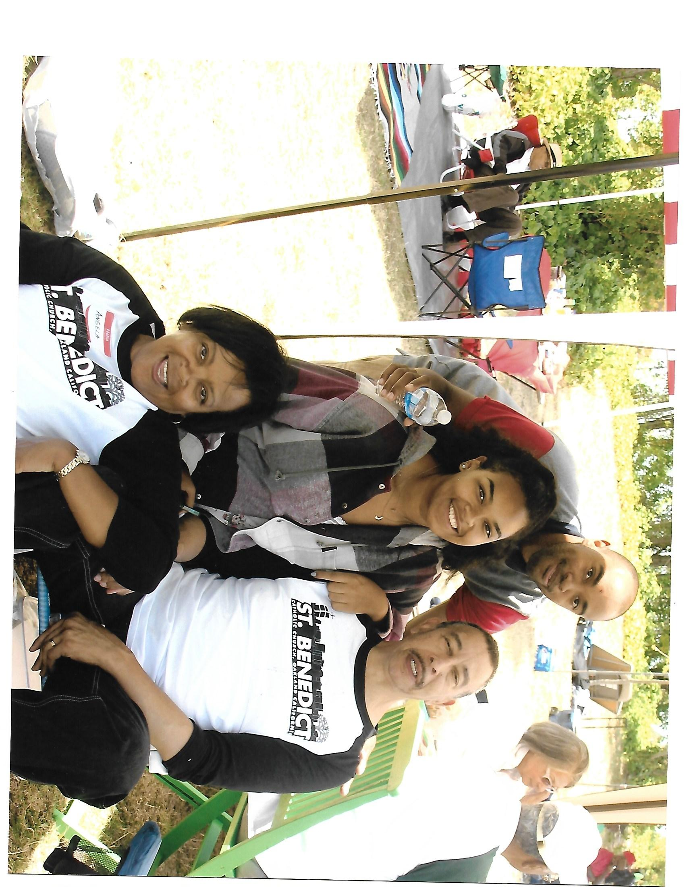

Member Memories
"The Man Called Boy Who Named Himself"
It was not until I was 10 or 12 years old that I knew Uncle Charlie’s real name.
His real name was Charles Kirkland, but his brothers and sisters called him “Boy” and I called him “Uncle Boy”. And B
Mather School for Colored Girls, Norvel T Daniel superintendent,
page 59 of 133, games and stories of the students, 1938
Norvel T Daniel, my grandfather, was the superintendent of the
Mather School for Colored girls at the end of the 1930's. My grandmother Neva taught there
as well. I have uncovered from my family things Norvel's attempt to document the game.
Holly
Solidarity
As a University of Missouri professor, I was proud to support
#ConcernedStudent1950 activists who camped out on Carnahan Quad. . . Although women of color
were at the heart of this movement, many white faculty stood in solidarity. . . I spent hour
NMAAHC
Black Catholics in Western North Carolina
During the year of 1934, the Franciscan Order sent Father Ronald
Scott on a mission to establish a Black Catholic parish in Asheville, North Carolina. St
Anthony of Padua Catholic Church & School opened its doors in 1936, in t

Angela
The Great-Great-Great-Great Grandson Of Plumb Sims
Christopher D. Sims
The Last One Standing - Major George W. Ford - 10th Cavalry, Company L, 1867
Linda
Effects of Racism on a 15 Year Old Black Youth - A Poem
My son Christopher McGraw wrote a poem for his English class:
Effects of Racism on a 15 Year Old Youth
Can’t go no where without a stare,
Not everyone is stealing there,
Walkin throu
Pamela
Henry & Lucy Breckenridge (Roslyn, Washington)
My son Christopher McGraw wrote a poem for his English class:
Effects of Racism on a 15 Year Old Youth
Can’t go no where without a stare,
Not everyone is stealing there,
Walkin throu
Pamela
The Day Before Grandpa Went To World War I
My son Christopher McGraw wrote a poem for his English class:
Effects of Racism on a 15 Year Old Youth
Can’t go no where without a stare,
Not everyone is stealing there,
Walkin throu
Pamela
My Grandfather Earlie Palmer: Mr. Juneteenth
Linda
The Brigade-A fight to end all Wars
Linda
Dear Mary, Dear Luther: A Courtship in Letters
Linda
Documents galore!
Linda